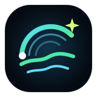

skymap ontarioPrivacy,without the fog.
SkyMap Ontario works without an account, advertising profile or SkyMap-owned tracking server.
Your map preferences stay on your device. When the app requests weather, air, fire or map data, your browser connects directly to the public service providing it.
What is stored locally
Your selected map layer, opacity, location preset and last map view may be stored in your browser or Android app storage. Clearing the site or app data removes these preferences.
Location access
Location is optional and only requested after you press “Use my location.” The coordinates are used to centre the map and identify a nearby AQHI station. SkyMap Ontario does not maintain its own location-history database.
External data requests
The app connects to Environment and Climate Change Canada, Natural Resources Canada, CARTO, OpenStreetMap-related services and content-delivery networks used to load the map library. Those providers receive ordinary technical request information such as your IP address and browser user-agent.
Ko-fi and GitHub
The public website is hosted on GitHub Pages. The optional support button opens Ko-fi in a separate page. SkyMap Ontario does not process payment information.
Emergency use
This is a visual information tool, not an official warning system. Data can be delayed, incomplete or unavailable. Always follow instructions issued by emergency services and government authorities.
Last updated: July 17, 2026
← Back to SkyMap Ontario